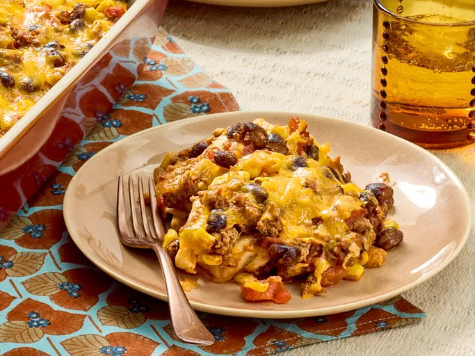

Mexican Quesadilla Casserole

Description
You want comfort? Well this casserole has layers of it. Beef,beans, veggies and cheese. It's quick to make and easy to clean. try making the Mexican Quesadilla.
Ingredients
You'll need:
- Cooking spray
- 1/2 cup chopped onion
- 1 (15 ounce) can tomato sauce
- 1 (15 ounce) can black beans, rinsed and drained
- 1 (14.5 ounce) can diced tomatoes with lime juice and cilantro (Such as Rotel)
- 1 (8.75 ounce) can whole jernel sweet corn, drained
- 1 (4.5 ounce) can chopped green chiles, drained
- 2 teaspooons chili powder
- 1 teaspoon minced garlic
- 1/2 teaspoon dried oregano
- 1/2 teaspoon red pepper flakes
- 6 flour tortillas
- 2 cups shredded Cheddar cheese
Directions
- Gather the ingredients. Preheat the oven at 350 degrees F(175 degrees C). Coat a 9x13-inch baking dish with cooking spray
- Heat a large skillet over medium-high heat. Add beef and onion; cook and stir until beef is completely browned, 5 to 7 minute. Drain and discard grease.
- Stir tomato sauce, black beans, diced tomatos, corn, and chopped green chiles into ground beef mixture; season with chili powder, cumin, garlic, oregano, and pepper flakes. Reduce heat to low; simmer for 5 minutes.
- Spread about 1/2 cup beef mixture into the prepared baking dish;top with 3 tortillas, overlapping as needed. Spread 1/2 cup beef mixture over tortillas; sprinkle with 1 cup cheddar cheese. Repeat layering once more with remainings 3 tortillas, beef mixture, and cheddar cheese.
- Bake in the preheated oven until cheese melts and mixture is heated through, about 15 minutes. Cool briefly before serving.
- Serve and enjoy!
Home